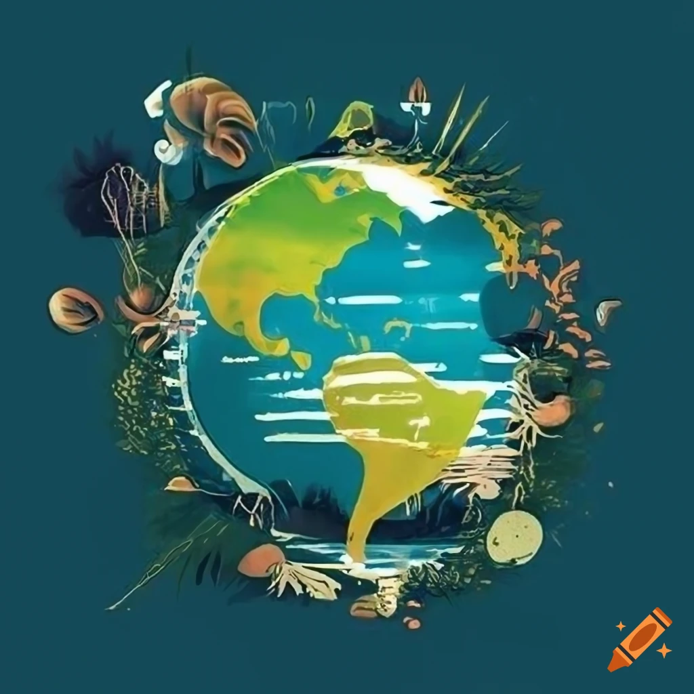

Ditch Plastic, Go Green: Biodegradable Alternatives for a Healthy Planet
Plastic pollution is a growing problem, harming our environment and wildlife. But there's good news! Biodegradable alternatives are here to replace plastic, offering a sustainable solution for everyday products.
Biodegradable materials break down naturally by microorganisms, leaving no harmful residues. This means less plastic ending up in landfills and oceans, protecting ecosystems and wildlife.
Here's how you benefit:
Protect the planet: Reduce your plastic footprint and contribute to a cleaner environment.
Compostable options: Turn some biodegradable products into nutrient-rich compost for your garden!
Sustainable resources: Many alternatives are made from renewable plant-based materials like bamboo, wheat straw, or even mushrooms!
Safe and healthy: Biodegradable materials are often free of harmful chemicals found in some plastics.
Make the switch! Look for alternatives like shopping bags made from natural fibers, food containers crafted from plant starches, or packaging materials derived from mushrooms. By choosing biodegradable options, you're making a conscious effort for a healthier planet, one step at a time.
 planatable notebook
planatable notebook
 solar charger
solar charger